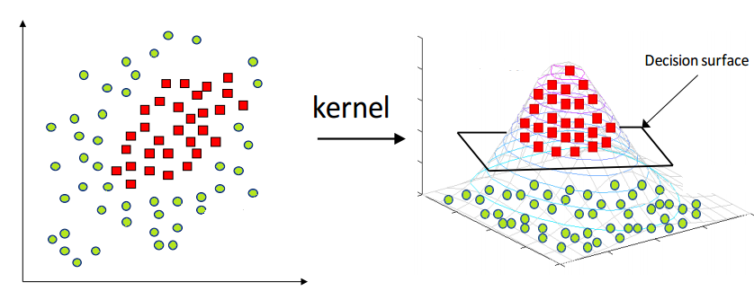

kernel trick
Increase the data dimension with non-linear feature combinations, and find the hyperplane "there" in the high-dimensional space.

Here, we have the Radial Basis Function (RBF) kernel (x,y)=(x,y,ex2+y2)
Back in 2D, the kernel projection is non-linear